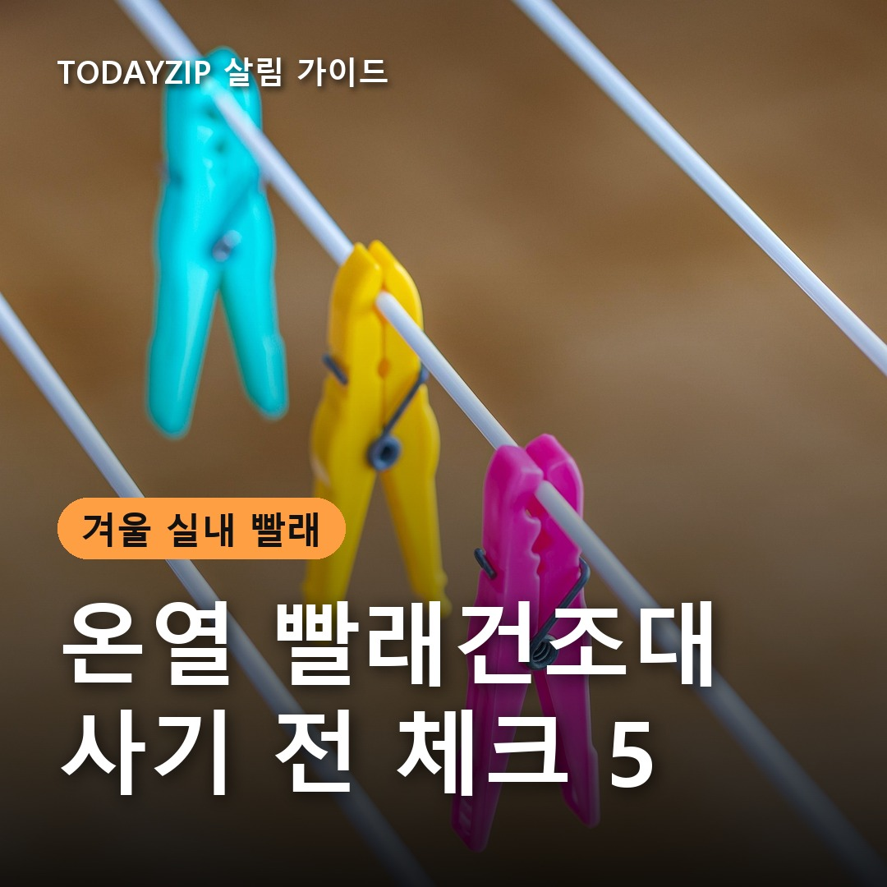
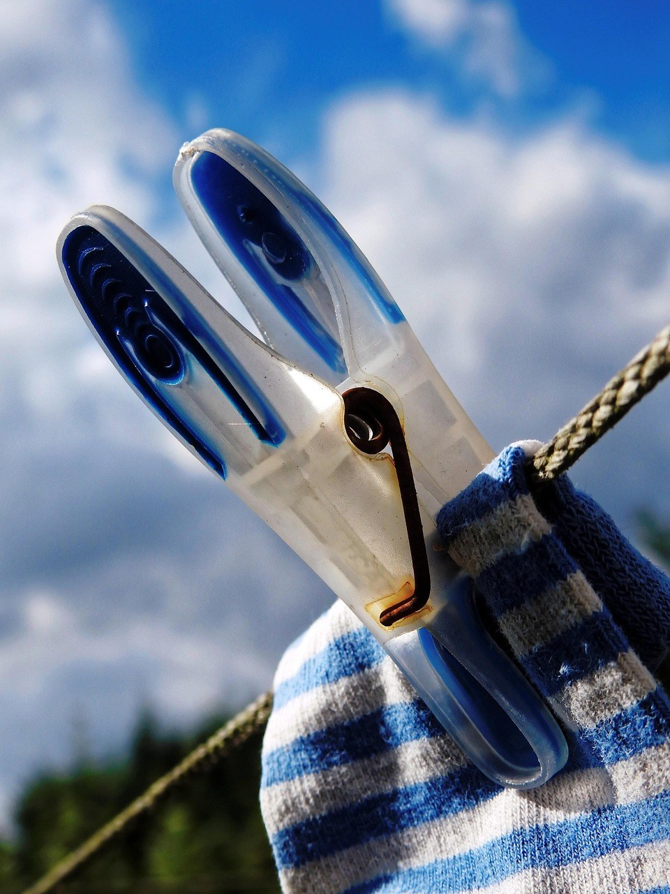
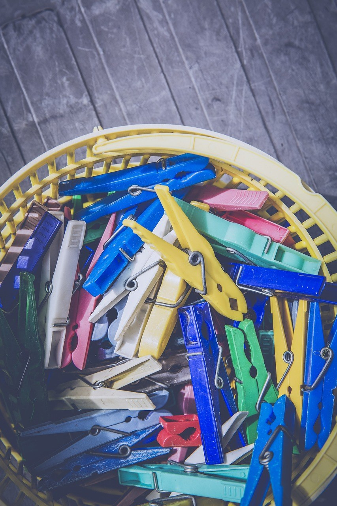
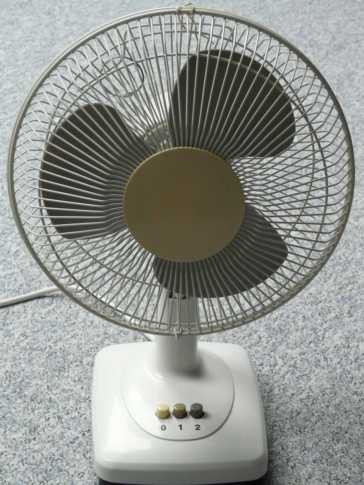

이 포스팅은 쿠팡 파트너스 활동의 일환으로, 이에 따른 일정액의 수수료를 제공받습니다.
[사진 1: 썸네일]
겨울에 실내에 빨래를 널면 하루가 지나도 축축하고, 걷을 때 꿉꿉한 냄새가 날 때가 있죠. 의류건조기를 들이기엔 자리도 가격도 부담이라 온열 빨래건조대를 찾아보는 분이 많아요.
그런데 온열 빨래건조대는 소비전력, 크기, 온도 조절 방식이 제품마다 꽤 달라요. 오늘은 사기 전에 확인할 다섯 가지를 순서대로 정리하고, 어떤 집에 맞는지도 같이 알려 드릴게요.
[사진 2]
온열 빨래건조대는 봉 안의 열선으로 빨래를 데우는 방식이라, 뜨거운 바람을 돌리는 의류건조기보다 소비전력이 작은 편이에요. 해외 제품 중에는 230W 안팎 모델이 흔하고, 의류건조기는 2,000W가 넘는 경우도 있어요.
전기 사용량은 소비전력(W) × 사용 시간으로 계산해요. 예를 들어 230W 제품을 5시간 켜면 약 1.15kWh예요. 상세페이지에서 소비전력을 확인하고, 하루 몇 시간 켤지 생각해 두면 전기요금을 미리 짐작할 수 있어요.
[사진 3]
📷 [직접 찍은 사진 넣기: 빨래건조대를 둘 자리 바닥을 줄자로 재는 모습]
온열 빨래건조대는 일자형, 날개형, 여러 단 타워형으로 나뉘어요. 한 번에 널 빨래 양과 놓을 자리를 같이 봐야 해요.
원룸이라면 펼친 크기만큼 접은 두께도 중요해요. 안 쓸 때 세워 둘 틈이 있는지 줄자로 먼저 재 보세요.
✍️ [내 경험 한두 줄: 겨울에 실내 빨래는 주로 어디에 너나요? (거실/방/베란다)]
온도를 단계별로 고를 수 있는지, 정해진 시간이 지나면 꺼지는 타이머나 자동 꺼짐 기능이 있는지 확인하세요. 밤에 널어 두고 잠드는 집이라면 타이머는 꼭 있는 편이 좋아요.
열이 나는 전기제품은 KC 안전 인증 표시가 있는지부터 보세요. 해외 인증이 KC를 대신하지는 않아요. 설명서의 최대 적재 무게와 주의 문구도 미리 읽어 두세요.
[사진 4]
📷 [직접 찍은 사진 넣기: 빨래 사이를 손 한 뼘씩 띄워 넌 건조대 모습]
일부 제품은 위에 씌우는 전용 덮개가 함께 있어 열을 모아 줘요. 덮개는 제품에 맞게 나온 전용 제품만 쓰고, 이불이나 담요를 임의로 덮지 마세요. 열이 빠지지 않으면 과열될 수 있어요.
온열 빨래건조대는 빨래를 데워 줄 뿐 방 안 습기는 그대로 남아요. 창문을 조금 열어 환기하거나 제습기·서큘레이터를 같이 쓰고, 빨래 사이 간격을 띄워 널면 실내 빨래 쉰내를 줄이는 데 도움이 돼요.
✍️ [내 경험 한두 줄: 실내에 빨래를 널면 마르는 데 보통 얼마나 걸리나요?]
Q. 온열 빨래건조대만 있으면 쉰내가 안 나나요?
A. 빨래를 데워 마르는 시간을 줄이는 데 도움이 되지만, 방 안 습기는 따로 빼야 해요. 환기나 제습을 함께 하고 빨래 간격을 띄워 주세요.
Q. 의류건조기와 비교하면 어떤가요?
A. 소비전력이 작고 자리를 덜 차지하는 대신 시간이 더 걸려요. 수건을 보송하게 말리는 건 의류건조기 쪽이 빠르니, 빨래 양과 자리를 보고 고르세요.
정리하면, 빨래가 많고 자리가 넉넉하면 날개형, 원룸처럼 바닥이 좁으면 타워형을 보고, 어떤 제품이든 소비전력·온도 조절·자동 꺼짐·KC 인증은 꼭 확인하세요. 온열 빨래건조대에 환기나 제습을 더하면 겨울 실내 빨래가 훨씬 수월해져요.
여러분은 겨울 빨래를 어떻게 말리고 계신가요? 쉰내 줄이는 나만의 방법이 있다면 댓글로 나눠 주세요.
인스타그램 @todayzip.info 에서 살림 꿀팁을 30초 영상으로도 볼 수 있어요.
이 포스팅은 쿠팡 파트너스 활동의 일환으로, 이에 따른 일정액의 수수료를 제공받습니다.